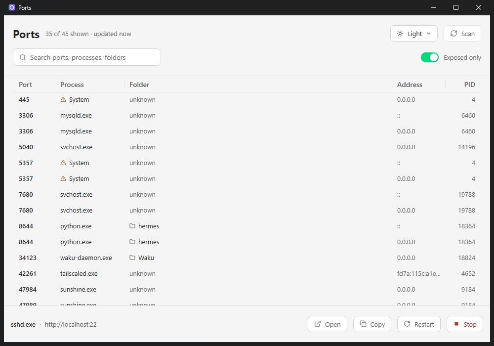
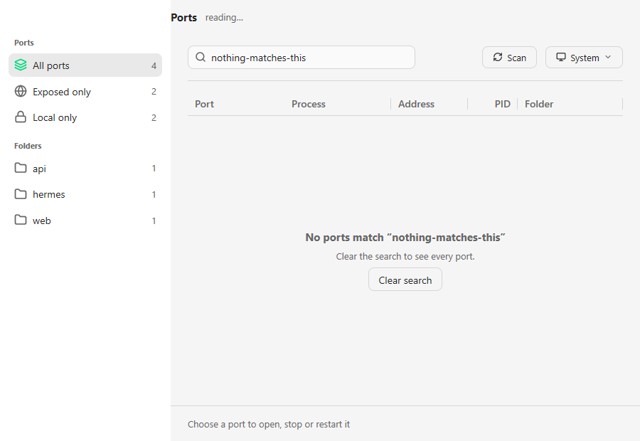
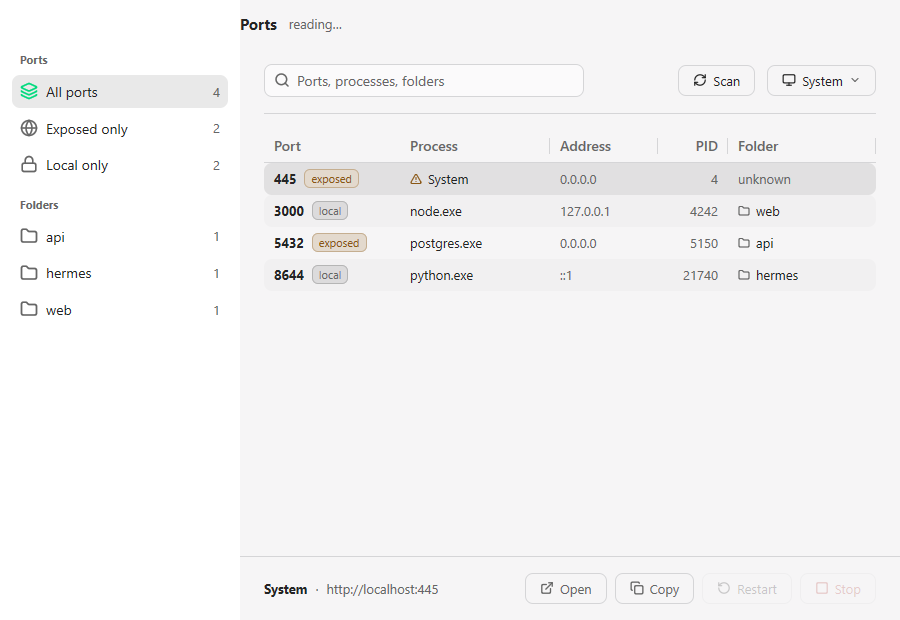

See what is listening, and which project owns it.
A native Windows app that lists every listening TCP port with the process that owns it,
its PID, and the folder it was started in. netstat
tells you a port is taken. This tells you which project took it.
One 11 MB binary · no runtime to install · opens instantly

Every listening port, the process behind it, and the folder it serves. Sort by any column; search across all of them.
Built for the question “what just took port 3000?”
No dashboard to configure, no agent to run. It reads the system the way Windows itself does, then gets out of the way.
The folder, not just the port
Two servers of the same program are told apart by the project each one serves. The working directory is read from the process itself.
Exposed only
One filter keeps the ports another machine could reach — the honest answer to “did I just expose a dev server?”.
Stop or restart, safely
Every destructive action asks first and names the process. A restart reuses the original command line and working directory.
Current without asking
It rescans every two seconds, off the UI thread, so the list stays live. Close it and it keeps watching from the tray.
The quiet states matter too
Nothing listening, nothing matching, a process it may not end — each says so plainly, and offers the next step.


Know what your machine is serving.